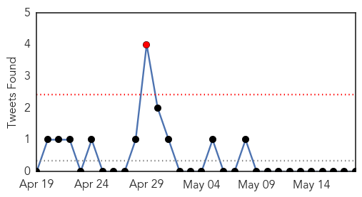
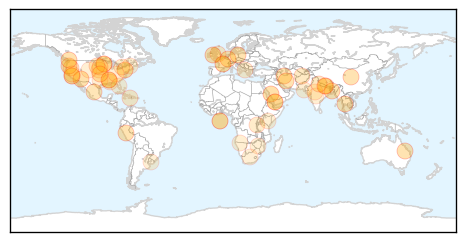

Unknown
30-Day Web Trend
0 alerts, 0 warnings
30-Day Twitter Trend
1 alerts, 0 warnings

Article Locations
Article Confidences

Top Articles:
- 0.992
- Ministry issues new MERS alert as 12 more cases surface
- 0.976
- Lyme disease: Doctors advise against long-term antibiotic treatment Republican American
- 0.975
- CDC: Salmonella Outbreak Has Sickened 50 People in 9 States
- 0.958
- Clark County saw gonorrhea outbreak in 2014
- 0.942
- Update: Case Count Now at 22 in Washington State E. Coli Outbreak
- 0.917
- Chicago Tribune
- 0.917
- Chicago Tribune
- 0.917
- Chicago Tribune
- 0.917
- Chicago Tribune
- 0.917
- Chicago Tribune
- 0.917
- Chicago Tribune
- 0.917
- Chicago Tribune
- 0.917
- Chicago Tribune
- 0.910
- The world windows to Thailand
- 0.910
- The world windows to Thailand
- 0.892
- Norovirus Outbreak From Lake Leads to CDC Guideline on Swimming Hygiene
- 0.892
- Bird Flu Found In Egg-Laying Facility, 2M Chickens Could Be Affected « CBS Minnesota
- 0.877
- May is Lyme disease awareness month
- 0.869
- Vilsack: Bird Flu Could Be 'Laterally Spread' By Humans
- 0.849
- Arizona, New Mexico report Salmonella cases tied to raw tuna
- 0.824
- A food poisoning report with good news
- 0.797
- A UC Santa Cruz Professor May Have Actually Developed an HIV Vaccine
- 0.751
- Summer 2014 Norovirus outbreak connected to Oregon lake
- 0.729
- Mystery of Indian Poultry Disease Solved
- 0.701
- Rampant corruption in health sector irks Faryab residents
- 0.680
- As Beyoncé Visits Haiti, Facebook Users Show Skepticism
- 0.680
- Sioux Falls Health Department Stresses Awareness And Prevention Of Sexually Transmitted Diseases
- 0.677
- STD cases in South Dakota on the rise, health officials say
- 0.664
- Study shows non-memory Alzheimer's symptoms more likely in younger people
- 0.634
- Nepal to seek more aid at World Health Assembly
- 0.627
- WDAM-TV 7-News, Weather, Sports-Hattiesburg, MS
- 0.624
- Testing Finds No Hantavirus In Yosemite Valley, Some At Tuolumne Meadows Lodge Area
- 0.621
- Quake-stricken Nepal to appeal for more aid at World Health Assembly - Xinhua
- 0.615
- Antibiotics Resurface as Alternative to Removing Appendix
- 0.613
- At Minnesota legislature: Buffer agreement reached, but…
- 0.610
- Sec. of Agriculture Vilsack says feds responding to avian flu outbreak (AUDIO)
- 0.609
- Macedonia’s embattled leader rallies supporters in show of force
- 0.609
- Société Générale 'was aware' of deals by rogue trader Kerviel
- 0.609
- Cannes review: ‘The Measure of a Man’ is French social critique at its finest
- 0.609
- Burundi president fires defence chief after coup attempt
- 0.598
- Health officials watching for ticks in T.O.
- 0.568
- The Caledonian-Record
- 0.563
- Médecins Sans Frontières (MSF) International
- 0.557
- Nepal to seek more aid at World Health Assembly
- 0.552
- Stanford Health Care Completes Its Affiliation with ValleyCare Health System
- 0.549
- Video: Amory’s Gilmore Officially Takes on Merit Name
- 0.544
- Health Department Says Stomach Bug Spreading In Lexington - LEX18.com
- 0.542
- Data Mining, GMO’s, Diabetes Treatment: Doctor Kevin Most
- 0.539
- More than 7,000 dead in Nepal quake
- 0.537
- Naegleria Takes Third Life In Karachi This Year
Showing top 50 articles...
Top Tweets:
- 0.597
- Asamblea en la UPR Cayey ahora mismo en el Teatro Ramón Frade. No dejes que otra gente vote por ti. @uprcayey
- 0.592
- RT: 💋 A la flor de la 'Psychotria elata', con pétalos en forma de labios humanos, dan ganas de darle un besazo. http://t.co…
Ebola
30-Day Web Trend
0 alerts, 1 warnings

30-Day Twitter Trend
0 alerts, 0 warnings

Article Locations

Article Confidences

Top Articles:
- 1.000
- Guinea registers 10 new Ebola infections
- 1.000
- Guinea registers 10 new Ebola infections
- 1.000
- Japanese man in hospital for Ebola
- 1.000
- Guinea registers 10 new Ebola infections
- 0.999
- Think again: Why did Liberia beat Ebola before Guinea or Sierra Leone?
- 0.999
- News Scan for May 18, 2015
- 0.997
- WHO under Fire for Slow Response to Ebola Epidemic
- 0.996
- Flinders News> Blog Archive > Ebola crisis sets back African health targets
- 0.995
- Ebola crisis sets back African health targets
- 0.994
- WHO boss Chan launches $100 million health emergency fund
- 0.994
- For Efforts that Ended Ebola, Nyenswah Commends AU
- 0.994
- Public health in Africa beyond Ebola
- 0.992
- Merkel plugs global epidemics plan at WHO conference
- 0.992
- Facing Ebola Outbreak
- 0.990
- WHO Director-General Margaret Chan Creates $100 Million Fund for Future Crises
- 0.981
- Aust nurses receive awards for Ebola work
- 0.978
- Citing ‘defining moment’ sparked by Ebola outbreak, UN health agency chief pledges key reforms
- 0.976
- Chinese medical team returns after anti-Ebola task- China.org.cn
- 0.970
- How Nigeria Beat The Ebola Virus In Three Months
- 0.969
- Merkel urges tighter WHO management after Ebola catastrophe
- 0.967
- Tony Blair Commends Sierra Leone in the fight against Ebola, Expresses support to the Country’s Post Ebola Recovery Programme
- 0.959
- Politico SL News After 7 days NERC confirms new Ebola case in Freetown
- 0.943
- WHO Director-General's speech at the Sixty-eighth World Health Assembly
- 0.936
- Cuban ebola team nominated for Nobel Peace Prize peoplesworld
- 0.934
- WHO to Create New Program for Health Emergencies
- 0.933
- Dutch company donates drugs to Sierra Leone
- 0.930
- Humans living longer by six years, report shows
- 0.925
- WHO recommends Ebola reagent kit developed by China
- 0.922
- US$100 million fund needed for future health alerts
- 0.902
- Welcome to the Expotimes News
- 0.900
- Merkel warns WHO meet of antibiotics dangers
- 0.898
- Plan to reform WHO after Ebola to be unveiled by Angela Merkel
- 0.866
- NJALA UNIVERSITY IS A MESS
- 0.835
- News release on the opening day of the 68th World Health Assembly - World
- 0.835
- Plan to reform WHO after Ebola to be unveiled by Angela Merkel
- 0.808
- Need redoubled efforts towards public health challenges
- 0.804
- Need redoubled efforts towards public health challenges: Nadda
- 0.793
- WHO boss Chan launches $100 million health emergency fund
- 0.762
- 54 quarantined at PTS « Awoko Newspaper
- 0.714
- Suspected Ebola Patient Hospitalized in Fukuoka after trip to Guinea
- 0.705
- India gives $2.1 million to WHO; Health Minister JP Nadda assumes WHA presidency
- 0.672
- India gives USD 2.1 million to WHO, JP Nadda assumes WHA presidency
- 0.659
- President Koroma Receives New UNMEER Head
- 0.656
- Parliament to Visit Local Councils
- 0.653
- 20th CBRNE Soldiers help to halt Ebola in Liberia
- 0.597
- Ebola: Back to School in Sierra Leone
- 0.585
- India commits $ 2.1 mn to WHO
- 0.557
- ‘Mega-disasters’ and other reasons why WHO director’s speech should scare you
Top Tweets:
- 0.984
- Dr Chan: On 9 May, WHO declared an end to the Ebola outbreak in Liberia WHA68 Ebola
- 0.977
- WHO Vows Reform After Ebola Outbreak Mistakes - TIME http://t.co/lpXZebc2v8 ebola EVD
- 0.970
- In Sierra Leone, Religion Major Player in Ebola Fight - Voice of America http://t.co/lfIE6ydozA ebola EVD
- 0.959
- The week ahead: Eurovision to Ebola - Newsweek http://t.co/roliJYz8EG ebola EVD
- 0.919
- Dr Chan: The Ebola outbreak shook this Organization to its core WHA68
- 0.911
- WHO announces changes after widespread Ebola criticism - CNN http://t.co/YPJwBgvHki ebola EVD
- 0.890
- Fukuoka man undergoing Ebola tests after visiting Guinea - The Japan Times http://t.co/zEQN91ZFxd ebola EVD
- 0.890
- Fukuoka man undergoing Ebola tests after visiting Guinea - The Japan Times http://t.co/vM2r8ibLWQ ebola EVD
- 0.862
- Ebola Update: 26,763 confirmed, probable and suspected cases reported in three most affected countries, with 11,074 deaths. EbolaResponse
- 0.857
- Fukuoka man returning from Guinea gets tested for possible Ebola infection - The Japan Times http://t.co/klIWL1Xxxu ebola EVD
- 0.848
- Mark your calendar: May 19 the World Health Assembly discusses the Ebola outbreak http://t.co/4cHnwnSiib WHA68 EbolaResponse
- 0.836
- Controlling the Last Known Cluster of Ebola Virus Disease — Liberia, January–February 2015 http://t.co/WyfkMzvU9Z
- 0.822
- Dr Chan: Our biggest emergency response is concentrated in West Africa, where we currently have 800 staff on the ground WHA68 Ebola
- 0.817
- RT: challenges in containing Ebola in Sierra Leone: no policy on outbreak response, parallel & unilateral efforts by multipl…
- 0.790
- En Guinée, Ebola n’a pas altéré le rêve minier http://t.co/e7jru3UpmR
- 0.786
- Recovering from the Ebola outbreak in SierraLeone: @FAO boosts support to the Holima Agribusiness Centre https://t.co/00a1TdgK60
- 0.781
- 18 May news on avianflu avianinfluenza Ebola EbolaResponse MERS NepalQuake WHA68 http://t.co/hGSW9UgpsL
- 0.769
- In Sierra Leone, Religion Major Player in Ebola Fight - Voice of America http://t.co/0eqBetcsgx
- 0.765
- The unsung heroes in the fight against Ebola - Deutsche Welle http://t.co/tInAGXxCWg ebola EVD
- 0.758
- Children could be next victims of Ebola as the virus is disrupting the delivery of essential vaccines http://t.co/1kuYFxFdhU
- 0.739
- MSF Reflects On Ebola Outbreak http://t.co/IBhN1aoN2u
- 0.707
- Ebola, Others Top Agenda as 68th World Health Assembly Begin - http://t.co/NaiI6Jl8yj http://t.co/NvS3ptljwA ebola EVD
- 0.700
- The silent heroes in the fight against Ebola - Deutsche Welle http://t.co/nX9hoqdIQR ebola EVD
- 0.699
- Today's Ebola Executive Summary: Small Spike in Cases in Guinea, Sierra Leone http://t.co/TLohtO6iDK
- 0.697
- Ebola Outbreak Not Over For Guinea As Spike In New Cases Linked To FuneralCeremonies http://t.co/EpIBrCDYqv
- 0.680
- Will Africa’s future epidemic ride on forgotten lessons from the Ebola epidemic? http://t.co/THOED6osU1
- 0.649
- How we beat the Ebola epidemic http://t.co/xnpD916Zkl
- 0.647
- CDC DiseaseDetective Cristina deployed to Sierra Leone & visited communities to interview possible Ebola patients. http://t.co/10h8xO0TWx
- 0.642
- Plan to reform WHO after Ebola to be unveiled by Angela Merkel - The Guardian http://t.co/fRobP4d2yG ebola EVD
- 0.633
- Chancellor Merkel: Ebola outbreak in West Africa was a painful reminder to all of us for urgent international action WHA68
- 0.632
- Guinea Ebola cases climb due to transmissions at funerals http://t.co/K8oYkgBFbe via
- 0.630
- From today's Situation Report -> Resistance in Dubréka, Guinea following spate of new Ebola cases https://t.co/dtnmtozLAp EbolaResponse
- 0.617
- Guinea: Enhanced communityengagement to bring the Ebola outbreak to an end IFRC https://t.co/OPj8YQdFVo
- 0.615
- Dr Chan: WHO was overwhelmed, as were all other responders WHA68 Ebola
- 0.609
- Liberia’s economy greatly affected by the Ebola crisis according to a mission from: http://t.co/9HX20b87xQ AfricaAgainstEbola
- 0.609
- Dr Chan: The world was ill-prepared to respond to an outbreak that was so widespread, so severe, so sustained, and so complex Ebola WHA68
- 0.589
- Has the danÂger passed? Lessonslearned from the Ebola criÂsis http://t.co/I8UVQtauv3
- 0.576
- Nurses With Tablets and Bikers With Smartphones Join Ebola Fight - http://t.co/NaiI6Jl8yj http://t.co/cO02WLjieJ ebola EVD
- 0.572
- Initiation of a RingApproach to InfectionPreventionandControl at Non-Ebola Health Care Facilities - Liberia http://t.co/2VWxj8GW8i
- 0.558
- Sierra Leone records at least five new Ebola cases since May 14, after eight days of zero new diagnoses http://t.co/uajAqhq3Z0
- 0.547
- RT: What worked and where do we need to improve to extinguish the Ebola outbreak? WHA68 SocialGood Tune in LIVE: http://t.…
- 0.523
- Nurse Reflects on Tour Treating Ebola Patients in SierraLeone http://t.co/BPS2igpj0L
- 0.515
- Dr Chan: I have heard what the world expects from WHO: clear lines of command & control, for streamlined admin procedures WHA68 Ebola